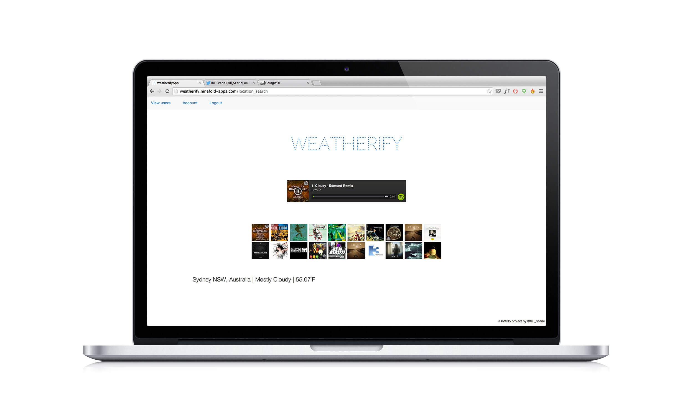

Weatherify takes your local weather conditions and creates a Spotify playlist based on that information.
For example, if your summary is 'Partly Cloudy', Weatherify will create a playlist of tracks containing 'cloudy' in their title.
Unfortunely the app has crashed on Heroku and I haven't had time to investigate why.